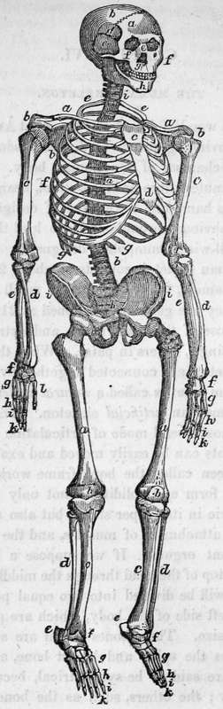

Chapter VI. The Human Skeleton
Description
This section is from the book "Human Physiology For The Use Of Elementary Schools", by Charles Alfred Lee. Also available from Amazon: Human Physiology, for the Use of Elementary Schools.
Chapter VI. The Human Skeleton
1. Of all the wonderful works of the great Architect, none hears such convincing proofs of divine wisdom and goodness as the mechanism of the human body. Every part, down to the minutest fibre or blood vessel, bears the impress of the Creator's hand, and the marks of design and contrivance are so obvious throughout, as to lead the mind irresistibly to an all wise, Omnipotent designer !
2. The human skeleton consists of about 252 bones, including the sesamoid, the teeth, and the small bones of the ear ; though they are generally reckoned at 211. They are divided into those of the head, trunk, and extremities, some of them being single, others in pairs. When the bones composing the skeleton are connected together by natural ligaments, they form what is called a natural skeleton; when by wires, it is termed an artificial skeleton. The latter is the common and most useful mode of articulation to the anato mist, as the joints can be easily moved and examined. The skeleton has been called the bony frame work of the body, because by its form and solidity, it not only retains every part of the fabric in its proper shape, but also affords a hard surface for the attachment of muscles, and the protection of many important organs. If we suppose a plane to pass down from the top of the head through the middle of the skeleton, the latter will be divided into two equal portions, called the right and left side of the body, which are perfectly alike in shape and size. Those bones which are situated in the centre, such as the spine and breast bone, and are intersected by it, are said to be symmetrical, because they are divided equally ; the others, such as the bones of the arm and leg, are in pairs.
3. The bones of the head are 55 in number, as follows:
Frontal, (Os Frontis, a,) | 1 |
Parietals, (Ossa Parietalia, b,) | 2 |
Temporal . | 2 |
Occipital, (Os Occipitis) | 1 |
Sphenoidal, (Os Sphenoides, d,) | 1 |
Elhmoid, (Os Ethmoides) | 1 |
Nasal, (Ossa Nasi, e,) . | 2 |
Malar, (Ossa malarum f,) | 2 |
Lachrymal, (Ossa Lachrymalia,) | 2 |
Upper Jaw bones, (Ossa maxillaria superiora) | 2 |
Palate bones, (Ossa palatina) | 2 |
Inferior turbinated bones, (Ossa turbinata) . | o |
Vomer | 1 |
Lower Jaw, (Os maxillare inferius., A,) | 1 |
Teeth, (Dentes) , * | 32 |
Tongue bone (Os hyoides) ... | 1 |
Total, 55 | |
To these are sometimes added the proper bones of the ear, contained in the tempo ralbones. ♦
Mallei, (hammer) | 2 |
Incudes, (anvil) | 2 |
Stapedes, (stirrup) | 2 |
Orbicularia, (round bones) | 2 |
Total, | 8 |
4. The trunk contains57 bones, viz:
Vertebrae, (a) | 24 |
Ribs, Costae, e, f, g,) | 24 |
Breast bone, (Sternum, c, d,) | 2 |
Hip bones, (Ossa innominata, i,) | 2 |
Rump bones, (Os sacrum, k,) | 1 |
Coccygeal bones, (Ossa coceygis) | 4 |
Total, 57 | |
-5. The upper extremities contain 68 bones, viz:
Collarbones, (Claviculae, a,) | 2 |
Shoulder blades, (Scapulae, &,) | 2 |
Arm bones, (Ossa humeri, c,) | 2 |
Fore arm bones, Radii et ulnee, d, e,) . | 4 |
Wrist bones, (Ossa carpi,f,) | 16 |
Hand bones, (Ossa metacarpi, g, | 8 |
Finger bones, (Phalanges digitorum manus, h, i,k) | 24 |
Thumb bones, (Ossa policis, l,) | 6 |
Sessamoid bones, (Ossa sessamoidea) . | 4 |
Total 68 | |
6 The inferior extremities contain 64 bones, viz:
Thigh bones, (Ossa femoris, a,) | 2 |
Knee pans, (Patelae,b,) | 2 |
Shin bones, (Tibiae, c,) . | 2 |
Small bone of the legs, (Fibulae) | 2 |
Tarsal, (Ossa tarsi, e,) . | 14 |
Metatarsal, (Ossa metatarsi, f,) | 10 |
Toe bones, (Phalanges digitorum pedis, h,i,k) | 28 |
Sessamoid, (Ossa sessamoidea) | 4 |
Total, | 64 |
Grand Total 252
7. The second plate represents a back view of the male skeleton, while the first is a front view.
a. The parietal hone, b. The occipital bone.
c. The temporal bone.
d. The cheek bone.
e. The lower jaw bone.
Neck and Trunk.
a. The bones of the neck.
b. The bones of the back.
c. The bones of the loins.
d. The hip bones. e. The sacrum.
Upper Extremity.
a. The collar bones.
b. The blade bone.
c. The upper bone of the arm.
d. The radius, c. The ulna.
f. The bones of the wrist.
g. The bones of the hands.
h. The first row of finger bones.
i. The second row of finger bones. k. The bones of the thumb.
Lower Extremity.
a. The thigh bone.
b. The large bone of the leg.
c. The small bone of the leg, d. The heel bone.
e. The bones of the instep. f. The bones of the toes.
8. It does not fall within the plan of the present work to give a description of the individual bones which go to make up the skeleton this must be sought in treatises on anatomy. Still there are many points connected with the subject of extreme interest to every reflecting mind, to which the attention of the young may be profitably directed, particularly as connected with the marks of wisdom and design in the Almighty architect. If our curiosity is excited to see a piece of ingenious machinery, or a new engine, shall we neglect to raise the covering which displays in the body the most striking proofs of design, surpassing all art in simplicity and effectiveness, and without any thing useless or superfluous.
9. If we compare the human body, as a work of art, with any forms of human architecture, how vastly superior does it appear. A watch, or a musical automaton are highly ingenious specimens of inventive skill; but where is the watch or the automaton that can, without repair, for the space of 80 or 100 years, continue to perform its movements with regularity and precision. And yet how much less complicated is their machinery, how vastly more solid, and durable the materials out of which they are formed !
10. If we examine a ship, we find it built for passive motion, and for resisting force externally applied ; a house or a bridge is constructed for solidity and firmness, on the principle of gravitation; a railroad car is built for rapid motion, and its wheels so adjusted, that they may not run off the track; but in the human body, we find not only securities against the gravitation of the parts, provisions to withstand shocks and injuries from without, but at the same time, the frame work is calculated to sustain an internal impulse from the muscular force which moves the bones as levers, or like a hydraulic engine, propels the fluids through the body.
11. The human fabric is admirably adapted to resist the influences to which it is subjected ; in other words, there is a nice balance between the power of exertion and the capability of resistance. A deer or a giraffe is never injured by any leap which their muscular powers enable them to make, because the inert power of resisting the shock, bears a relation to the muscular power with which they spring ; and so it is in man. The elasticity of his limbs is proportioned very accurately to his activity; he readily resists shocks and impulses upon the lower extremities, because they are adapted to this end; but if the same are applied to the upper, the bones are broken or displaced, because they are adapted rather for extensive and rapid motion, than for resisting violent shocks.
Continue to:
- prev: Chapter V. Chemistry Of The Human Body. Ultimate And Organic Elements
- Table of Contents
- next: The Human Skeleton. Part 2
Tags
humans, anatomy, skeleton, bones, physiology, organs, nerves, brain